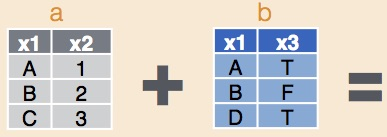

Combining data sets is an essential task for many projects. For example, we may have data on the abundance of species, but also a data set from external sources on the environmental conditions during our observations (e.g., temperature, rainfall, elevation, vegetation type).

We will use the package dplyr which has many convenient functions for combining data sets, First, load the package:
library(dplyr)As with the help page for Subsetting data, we will use a dataset where bats were sampled across regrowth forest in south-eastern Australia which has been thinned to reduce the density of trees.
We will also read in a dataset giving geographic locations for each site (for example, downloaded from a GPS) and nightly weather data (in this case downloaded and summarised from the Bureau of Meteorology data online).
Download the three sample data sets (Bats_data.csv, Geo_data.csv, and Weather_vars.csv) and import into R.
Bats <- read.csv(file = "Bats_data.csv", header = T, stringsAsFactors = F)
Geo <- read.csv(file = "Geo_data.csv", header = T, stringsAsFactors = F)
Weather <- read.csv(file = "Weather_vars.csv", header = T, stringsAsFactors = F)You’ll notice that we used the argument stringsAsFactors=F. This is because the factor format can confuse the joining process, so best to leave our non-numeric columns as “character” vectors.
dplyr has a function for simply adding all columns from one data set (z) to another (y):
bind_cols(y, z)This is only useful if the two data sets have the same number of rows and the rows are arranged in the same order (it just matches up rows by their position).
In this case, we have two quite different datasets that we want to join to our main dataset on bat abundance. The data set of geographic locations has been measured at the site-scale, so each separate site has a separate measurement of latitude and longitude.
The second dataset with weather information has used the same weather station for all sites, but has been measured for each separate survey night. Therefore we will use the Site column to join the Geo dataset and the Date column to join the Weather dataset.
The function left_join will add matching rows from a second dataset onto a first, specifying which variable in the first is used to make the match.
To add the geographic locations to the Bats data set, using the Site column to match the rows, we would use:
Bats_withGeo <- left_join(Bats, Geo, by = "Site")To now add the weather data to that new data set, using the Date variable to match rows, we would use:
Bats_withGeoWeather <- left_join(Bats_withGeo, Weather, by = "Date")You can check what has happened by viewing the data set, using the function dim, to find the dimensions of our datasets, or colnames to see a list of column names.
dim(Bats)
dim(Bats_withGeoWeather)
colnames(Bats_withGeo)
colnames(geo.weather.join)You will see that the new dataset, Bats_withGeoWeather has the same number of rows as the original, Bats, but an additional four columns: “Latitude”, “Longitude”, “Mean_temperature” and “Mean_humidity”.
That was a nice neat example, where we have all of the codes in our main dataset (Bats) matching up to codes in the data sets we wanted to join on. There are also a series of functions that help with messier data situations.
Let’s simulate a couple of messy datasets. Imagine you have bat activity data for five sites and tree density data for five sites, but only two of those sites (D and E) contain measurements for both variables. This may happen when you are using datasets collected by different people or for different purposes in the same study.
Bat_sim <- as.data.frame(cbind(
Site = c("A", "B", "C", "D", "E"),
Activity = c(62, 29, 30, 23, 24)
), stringsAsFactors = F)
Tree_sim <- as.data.frame(cbind(
Site = c("D", "E", "F", "G", "H"),
Tree_density = c(525, 390, 477, 778, 817)
), stringsAsFactors = F)## Site Activity
## 1 A 62
## 2 B 29
## 3 C 30
## 4 D 23
## 5 E 24## Site Tree_density
## 1 D 525
## 2 E 390
## 3 F 477
## 4 G 778
## 5 H 817If we want to combine data sets for only rows where we have both bat activity AND tree density measured and don’t care about the rest of the data, we can use inner_join.
Bat_withTree_inn.join <- inner_join(Bat_sim, Tree_sim, by = "Site")
print(Bat_withTree_inn.join)## Site Activity Tree_density
## 1 D 23 525
## 2 E 24 390If we are interested primarily in the bat dataset, we can use left_join() as above to keep all of the bat measurements and add tree densities where we have them. The missing tree density data will be NA.
Bat_withTree_left.join <- left_join(Bat_sim, Tree_sim, by = "Site")## Site Activity Tree_density
## 1 A 62 <NA>
## 2 B 29 <NA>
## 3 C 30 <NA>
## 4 D 23 525
## 5 E 24 390Conversely if we are primarily interested in tree densities, we can use right_join to keep all the tree density data and include bat activity where we have measured it. The missing bat data will be NA.
Bat_withTree_right.join <- right_join(Bat_sim, Tree_sim, by = "Site")## Site Activity Tree_density
## 1 D 23 525
## 2 E 24 390
## 3 F <NA> 477
## 4 G <NA> 778
## 5 H <NA> 817Alternatively, if we want to keep ALL of the data and decide for ourselves what to exclude later, we can use full_join.
Bat_withTree_full.join <- full_join(Bat_sim, Tree_sim, by = "Site")## Site Activity Tree_density
## 1 A 62 <NA>
## 2 B 29 <NA>
## 3 C 30 <NA>
## 4 D 23 525
## 5 E 24 390
## 6 F <NA> 477
## 7 G <NA> 778
## 8 H <NA> 817Finally, we can interrogate which rows of our data do or don’t have matches in another table. For example, we can use semi_join to print only the rows of bat measurements that have a matching site where trees were measured, or useanti_join to find the opposite, where trees were not measured.
Bat_inTree <- semi_join(Bat_sim, Tree_sim, by = "Site")## Site Activity
## 1 D 23
## 2 E 24Bat_notinTree <- anti_join(Bat_sim, Tree_sim, by = "Site")## Site Activity
## 1 A 62
## 2 B 29
## 3 C 30This tutorial was based on the excellent Data wrangling with dplyr and tidyr cheat sheet produced by Rstudio. Images were sourced from the same document. You can use ?dplyr to get help with this package.
Author: Rachel V. Blakey
Year: 2016
Last updated: Feb 2022